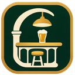

Le jeu est en pause. Les changements sont appliqués et sauvegardés immédiatement.
Cliquez sur une touche puis appuyez sur la nouvelle. Échap annule. Tab, E, Échap et F11 sont réservés au jeu.
Effets de service, bruit d’écoulement et ambiance synthétique. Les sons s’arrêtent pendant la pause.